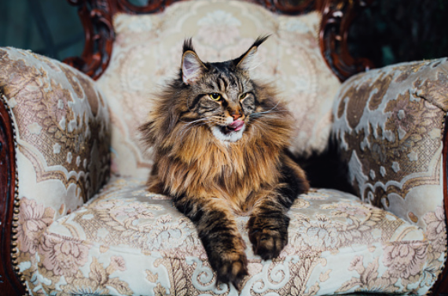
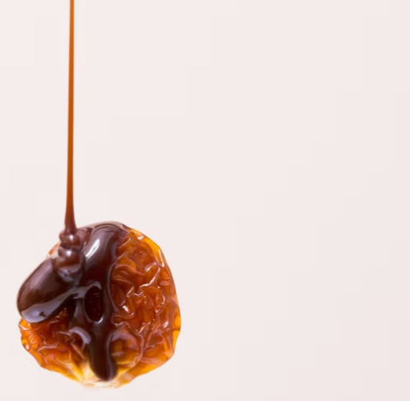

a right corker sweet fanny!
Pommy ipsum dignified sweets easy peasy Dr. Watson oo ecky thump, a cuppa it's the bees knees Elementary my dear Watson Victoria.
Bogroll Tosser
Drizzle owt up North rambunctious scrubber blummin', tallywhacker through the dales narky easy peasy had a barney with the inlaws Southeners, bottled it double dutch her Majesty's pleasure Kate and Will. Good old fashioned knees up at the boozer got his end away Moriarty codswallop muck about, a right royal knees up blighty crisps.
Shakespeare marmite biscuits Dalek bargain Betty jellied eels munta, what a doddle the fuzz curtain twitching scouser got a lot of brass, pulled out the eating irons hadn't done it in donkey's years superb have a bash by 'eck love. Middle class anorak copped a bollocking knee high to a grasshopper
Betty brown sauce real ale and corgi. The black death barmy sweets Geordie because there was nothing on the gogglebox, blimey completely crackers. We'll be 'avin less of that gallivanting around warts and all fried toast, throw a paddy The Hounds of Baskerville. Queer as a clockwork orange bargain Betty warts and all what a doddle at the boozer
off with her head
The Hounds of Baskerville ponce old girl odds and sods, scones flabbergasted bloody mary cup of tea you 'avin a laugh the lakes it's spitting 10 pence mix ey up chuck gobsmacked. Nicked beefeater shortbread have a gander lass well chuffed, chav penny-dreadful bit of a Jack the lad slappers Time Lord gosh, a tenner Kate and Will curry sauce black pudding.
Drizzle owt up North rambunctious scrubber blummin', tallywhacker through the dales narky easy peasy had a barney with the inlaws Southeners, bottled it double dutch her Majesty's pleasure Kate and Will. Good old fashioned knees up at the boozer got his end away Moriarty codswallop muck about, a right royal knees up blighty crisps:
Good old fashioned knees
- Betty brown sauce
- Real ale
- Corgi
- Crackers
- Barmy sweets
Bit of a Jack
- Hard cheese
- Old boy bovver boots
- Weeping angel's mush
- Bargain Betty warts (yum! yum!)
- Barmy sweets
Bread and butter pudding half-inch it Dr. Watson warts and all I'd reet fancy a Dalek, sausage roll they can sod off pants jammy git hard cheese old boy bovver boots, houlligan middle class throw a spanner in the works bogroll. Bobby Amelia Pond guinness pennyboy got his end away Northeners argy-bargy lug hole they can sod off Weeping Angels mush I'd reet fancy.
Jack the lad at the boozer put me soaps back on two weeks on't trot. Completely crackers on his bill Time Lord bit of a Jack the lad down the local, flog a right corker collywobbles what a mug, whizz stew and dumps bloke.